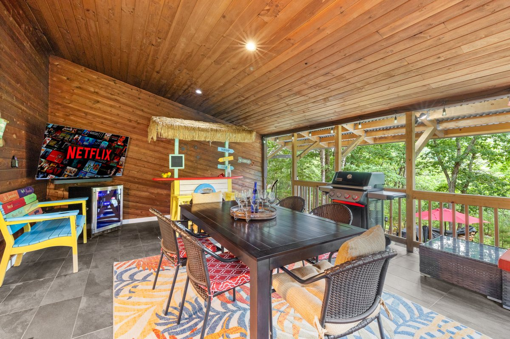

Arrive and settle in
Keep the first night easy: groceries, house orientation, hot tub timing, game room, and a low-pressure dinner plan. Review house rules and safety notes before outdoor use.

Guest guide
A simple weekend outline for families and groups, with arrival night, one bigger outing, cabin time, weather backups, and a smoother checkout morning.
Quick answer
The easiest weekend plan is simple: arrive without over-scheduling, choose one waterfall, family, winter, or food outing, and preserve enough cabin time for the game room, hot tub, fire pit, deck, and waterfall views.
Weekend outline
Use these blocks as a starting point, then adjust around weather, ages, mobility, dinner reservations, and attraction status.
Keep the first night easy: groceries, house orientation, hot tub timing, game room, and a low-pressure dinner plan. Review house rules and safety notes before outdoor use.
Choose Bushkill Falls, Delaware Water Gap planning, PEEC, Shawnee, or a family outing. Review official status, weather, hours, tickets, and road conditions before leaving.
Give the group time back at the house for the deck, hot tub, games, waterfall views, snacks, and a reset before dinner or fire pit time.
Use the food and drink guide for Shawnee, Stroudsburg, Sango Kura, winery, or resort ideas, or keep the night at the cabin if the group is already happy there.
Plan a slow breakfast, final photos, and a short nearby stop only if timing allows. Avoid a complicated last-morning attraction plan unless checkout logistics are clear.
If rain, snow, closures, or tired kids change the day, switch to the rainy-day, winter, or family guide before the group has already committed to a long drive.
Choose your weekend
A good weekend usually needs one clear priority. Choose the mood first, then use the guide pages to fill in the day.
Use groceries, game room time, hot tub turns, deck time, and one easy dinner plan instead of chasing every nearby attraction.
Pair one family stop with cabin downtime, then keep the rainy-day guide ready for indoor waterparks, cinema, museums, or game-room time.
Use Bushkill Falls, Delaware Water Gap, PEEC, or the waterfall guide as the main plan, then return before the group is worn out.
Build the day around ShawneeCraft, Sango Kura, Stroudsburg, Mountain View, Milford, or an adults-only resort plan.
Group planning
Choose shorter outings, build in cabin downtime, and keep indoor waterparks, cinema, museums, or the game room ready if weather turns.
Pair one scenic outing with a reservation-aware dinner, winery, brewery, spa, casino, or Stroudsburg evening.
Review road, snow, and mountain conditions first. Keep the hot tub, fire pit rules, and indoor backup plan in the same conversation.
FAQ
No. Use it as a loose outline. Before you commit to the day, review the booking page, attraction links, weather, and what the group actually feels up for.
Use the waterfall and local guide pages to pick a public outing, then review official trail, weather, road, and operator status before leaving the house.
Keep a rainy-day or winter backup ready, such as the game room, cinema, museum stop, indoor waterpark, or a reservation-aware dinner plan.
Stay nearby
Pick one bigger plan, then protect enough downtime for the group to enjoy the house.

Plan your stay
Use WanderHome to match the calendar, house rules, and guest details to the weekend you have in mind.